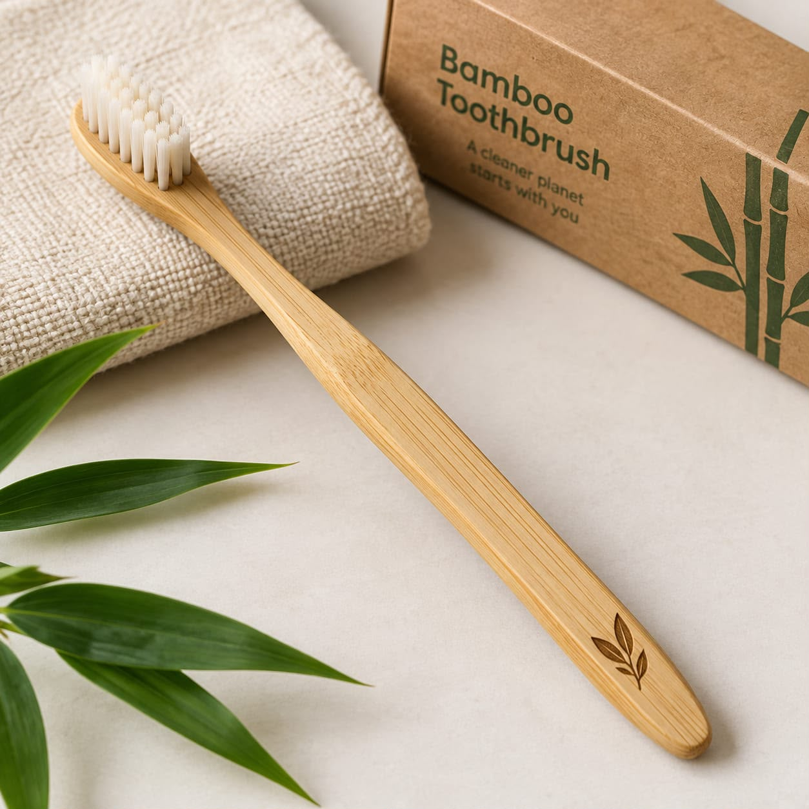

MATERIALS GUIDE
Why Bamboo Toothbrushes Are a Smarter Daily Swap
A bamboo handle offers a lower-waste alternative to plastic, making it a simple switch for your everyday routine without compromising convenience.
Read Full Guide →